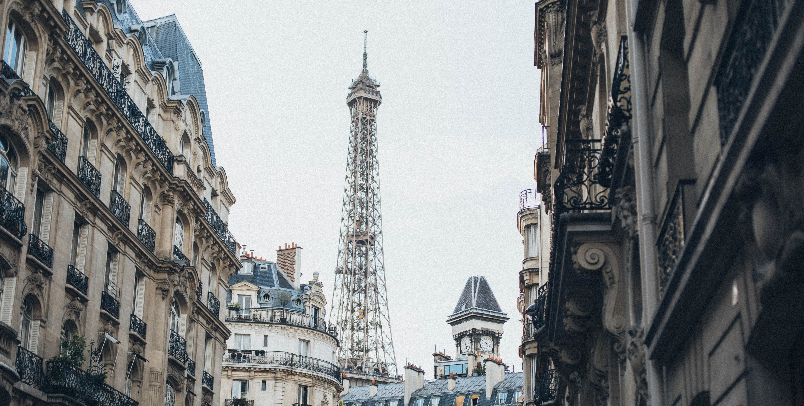

WHITE

Beautiful Day With Friends In Paris
Li Europan lingues es membres del sam familie. Lor separat existentie es un myth. Por scientie, musica, sport etc, litot Europa usa li sam vocabular. Li lingues differe solmen in li grammatica, li pronunciation e li plu commun vocabules. Omnicos directe al desirabilite de un nov lingua franca: On refusa
Beautiful Day With Friends In Paris
Li Europan lingues es membres del sam familie. Lor separat existentie es un myth. Por scientie, musica, sport etc, litot Europa usa li sam vocabular. Li lingues differe solmen in li grammatica, li pronunciation e li plu commun vocabules. Omnicos directe al desirabilite de un nov lingua franca: On refusa
Food Photography

For last few years I have this yearning to have a personal blog — a place to gather what inspires me and what helps me grow and also a place to play & experiment, to photograph and to tell stories. Finally I can say that it's here. Wholehearted delights is a
#Photography #PortfolioBy King Rayhan
ELEGANT, SIMPLE & MINIMALIST BLOG MADE WITH LOVE
For last few years I have this yearning to have a personal blog — a place to gather what inspires me and what helps me grow and also a place to play & experiment, to photograph and to tell stories. Finally I can say that it's here. Wholehearted delights is a
#Photography #PortfolioBy King Rayhan
BEAUTIFUL DAY WITH FRIENDS IN PARIS
For last few years I have this yearning to have a personal blog — a place to gather what inspires me and what helps me grow and also a place to play & experiment, to photograph and to tell stories. Finally I can say that it's here. Wholehearted delights is a
#Photography #PortfolioBy King Rayhan